From communication to behavior change
Psychology of Climate Change Communication · Week 11
Dr. Viktoria Cologna and Dr. Jan Pfänder
Two weeks ago
We ended the session on misinformation with the conclusion that individual-level interventions tend to miss the bigger-picture problems of the media landscape.
Today we look at behaviour in the same way. How far can we get by changing individuals, and what would it take to change the system they live in?
Poll (3 minutes)
“From this list of options, which three do you think would most reduce the greenhouse gas emissions of an individual living in one of the world’s richer countries?” Write down your three numbers, then raise your hand for each of them as I read the list.
- Recycling as much as possible
- Buying energy only from renewable sources
- Replacing a typical car with an electric car or hybrid
- Replacing traditional light bulbs with LED bulbs
- Hang-drying clothes instead of using a dryer
- Avoiding one long-distance flight (six hours or more)
- Not having a car
- Eating a plant-based diet
- Having one fewer child
A lens for today
In 2023, the behavioural scientists Nick Chater and George Loewenstein argued that their field had tried too hard to change individuals within the existing rules, and too little to change the rules themselves. (Chater & Loewenstein, 2023a)
They called these the i-frame (the individual) and the s-frame (the system). We will use this distinction to sort today’s evidence and test it at the end.
Overview
The first half is about changing individuals, the second about changing the system.
- The intention–behaviour gap
- Which behaviours matter, and whose?
- What do behavioural interventions achieve?
- Changing the players or changing the game: the i-frame and the s-frame
- Beyond the dichotomy: individuals in many roles
- What can communication do for system change?
1. The intention–behaviour gap
Most people say they are willing to act
In a representative survey in 125 countries, 69% of respondents said they would contribute 1% of their personal income to fight climate change. (Andre et al., 2024)
These statements carry some signal. In a US validation study, people who said they were willing donated 43% more to a climate charity than those who said they were not. (Andre et al., 2024)
But intentions often stay intentions
Even when protecting their own homes, people often do not follow through. In a German panel of households, about one in four planned flood-protection measures had been carried out two to eight years later. (Osberghaus et al., 2025)
For protection against heat, it was about one in eight. (Osberghaus et al., 2025)
How well do intentions predict behaviour?
Meta-analyses, which pool many studies, found moderately strong links between intentions and environmental behaviour. But many of these studies relied on what people said they had done. (Bamberg & Möser, 2007; Fielding & Hornsey, 2026)
A newer meta-analysis, not yet peer-reviewed, used only observed or verified behaviour. There, intentions explained only about 5% of the differences in behaviour between people. (Fielding & Hornsey, 2026)
Changing intentions changes behaviour less
Across 47 experiments, interventions that changed intentions a lot changed behaviour only about half as much. (Webb & Sheeran, 2006)
The gap comes mainly from people who intend to act and then do not. In exercise studies, about half of those who intended to be active did not follow through. (Conner & Norman, 2022; Sheeran & Webb, 2016)
Commitments are easy, actions are harder
A megastudy tests many interventions side by side in one large experiment. In the control group of one US megastudy, 79% committed to flying less and 71% to eating less beef. (Goldwert et al., 2026)
Fewer took real actions: 49% donated to an environmental organisation, and 41% wrote to their representative. The behaviours differ, so this only illustrates the gap. (Goldwert et al., 2026)
A problem for our own field
Many intervention studies in climate communication measure intentions only. Critics argue that the interventions that raise intentions most need not be the ones that change behaviour most. (Dablander et al., 2025)
Why do intentions fail?
The reading sorts the reasons into three levels. Can you name them, with one example each?
The reading names the person, the social context and the structures people live in. (Fielding & Hornsey, 2026)
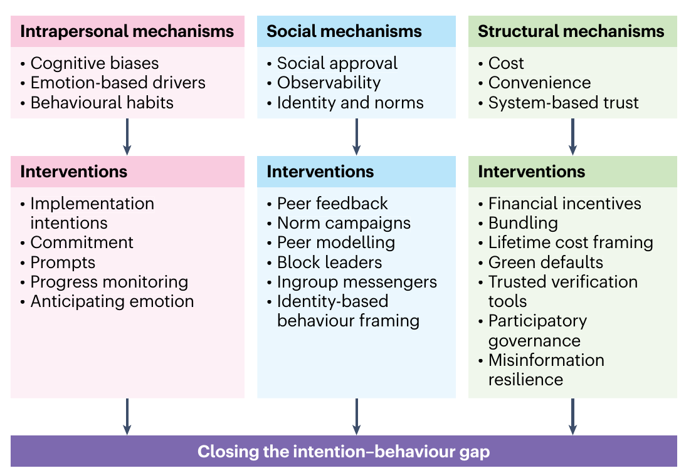
Fielding & Hornsey (2026)
Within the person
People form intentions in a calm and abstract state (“I should use the car less because I care about the planet”). They act in the moment, facing concrete costs (“I’m running late, and it’s raining”). (Fielding & Hornsey, 2026)
For frequent behaviours, habits take over. Intentions to drive or cycle predicted behaviour only when the habit was weak. (Fielding & Hornsey, 2026)
In the social context
People seem to follow through more often when others can see what they do. (Fielding & Hornsey, 2026)
Conflicting norms can keep people from acting on their intentions. Friends may encourage someone to join a climate protest that family and colleagues disapprove of. (Fielding & Hornsey, 2026)
In the structures people live in
Many people lack control over the behaviour. A tenant cannot replace the heating system, and where buses are unreliable, few people take them. (Fielding & Hornsey, 2026)
In a city, switching to public transport may depend mainly on a person’s intention. In a rural area without good connections, it may hardly be possible. (Fielding & Hornsey, 2026)
Your own gap (2 minutes, with your neighbour)
Think of one climate-related thing you intended to do in the past year and did not do. Which of the three levels explains most of it: something within you, your social context, or the structures you live in?
The levels interact
“[A] person may intend to cycle more often, but without bike lanes or safe routes, the habitual car commute remains dominant, illustrating how habits and infrastructure co-produce behavioural inertia.” (Fielding & Hornsey, 2026)
What can close the gap?
The reading lists tools for each level, from concrete plans to peer models, green defaults and subsidies. For environmental behaviour, it describes their effects as “small to medium”. (Fielding & Hornsey, 2026)
Most of this research targets the person, which is the pattern Chater and Loewenstein criticise. (Fielding & Hornsey, 2026)
If many barriers lie in the structures people live in, how much can communication aimed at individuals achieve?
2. Which behaviours matter, and whose?
From closing the gap to choosing the target
Closing the intention–behaviour gap helps the climate only if people intend the behaviours that matter. We come back to what interventions on individuals achieve in section 3.
First we ask which behaviours matter, and whose. Let us return to the poll.
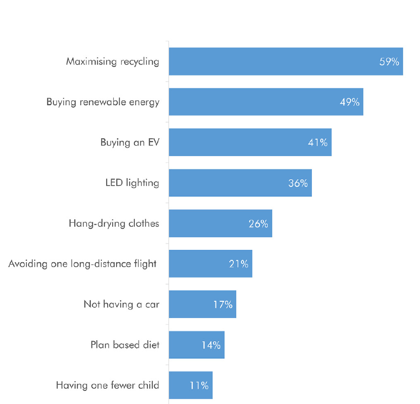
And in Switzerland?
The Swiss answers showed the same pattern as the global ones. More than half of the Swiss sample put recycling among the three most effective actions. (Ipsos, 2021)
Fewer than a third chose not having a car, and fewer than a fifth a plant-based diet. (Ipsos, 2021)
What the estimates say
For rich countries, Wynes and Nicholas recommend living car-free, avoiding long flights and eating plant-based as widely applicable actions with a high impact. (Wynes & Nicholas, 2017)
Recycling saves about a quarter as much as a plant-based diet, and changing light bulbs about an eighth. (Wynes & Nicholas, 2017)
One fewer child has the largest estimate, but it counts the emissions of future descendants. (Wynes & Nicholas, 2017)
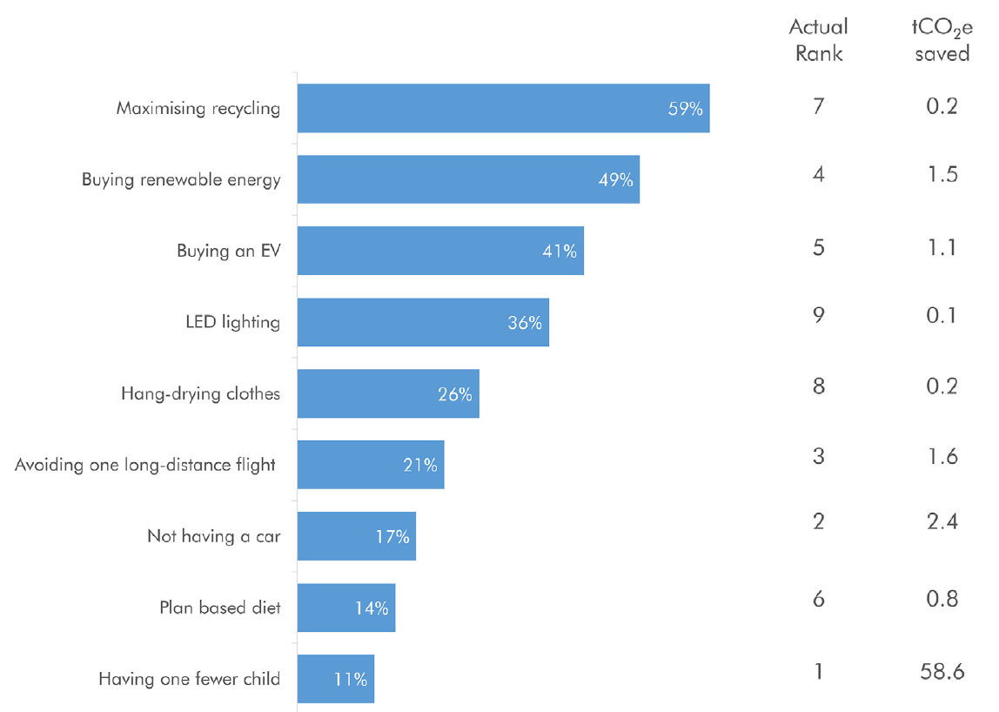
Hampton & Whitmarsh (2023), based on Ipsos (2021) and Wynes & Nicholas (2017)
Textbooks and governments recommend the small stuff
Ten Canadian high-school science textbooks rarely mentioned the high-impact actions. These made up only 4% of the actions they recommended. (Wynes & Nicholas, 2017)
Government climate resources from the EU, the USA, Canada and Australia also focused on lower-impact actions. (Wynes & Nicholas, 2017)
A robust pattern
- In the US, people underestimated the energy use and savings of high-energy activities most of all. (Attari et al., 2010)
- Swiss participants underestimated the effect of a sustainable diet and overestimated that of efficient light bulbs. (Cologna et al., 2022)
- A 2026 US study found that people overrate recycling and underrate eating less meat and flying less. (Herberz et al., 2026)
More common actions tend to have a smaller impact
In the same US study, the actions that many people already take, such as recycling, tended to have the smallest effect on emissions. (Herberz et al., 2026)
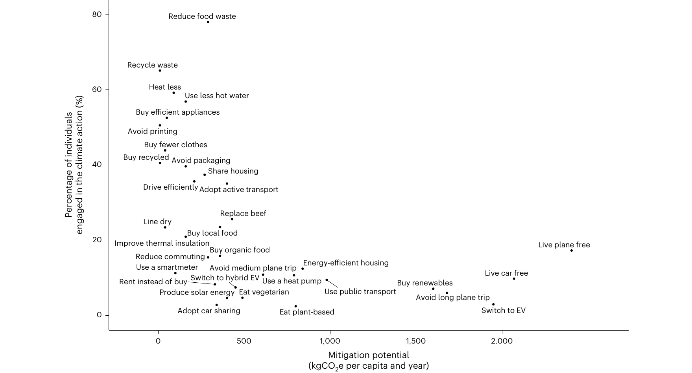
Herberz et al. (2026)
Why do we get it wrong?
The authors suggest that people judge the impact of an action by how easily examples come to mind (the availability heuristic), and by reasoning toward the conclusion they prefer (motivated reasoning). (Herberz et al., 2026)
Telling people which actions matter most improved their estimates only partly. (Herberz et al., 2026)
Correcting the misperception has a side effect
In a US experiment, explaining which personal actions matter most shifted people’s commitments toward high-impact actions. (Goldwert et al., 2025)
It also lowered their commitment to collective actions such as voting or marching. (Goldwert et al., 2025)
We return to this worry in section 4: a focus on personal actions might weaken support for collective ones.
Whose emissions?
According to the IPCC, the 10% of households with the highest emissions per person cause 34–45% of global household emissions, and the bottom 50% cause 13–15%. (Calvin et al., 2023)
Counting the emissions of what people invest in, one estimate puts the top 1% of emitters at 17% of the global total, mostly through their investments. (Chancel, 2022)
We underestimate this inequality too
Before the next slide: how many times larger do you think the carbon footprint of the richest 1% in the USA is than that of the poorest half?
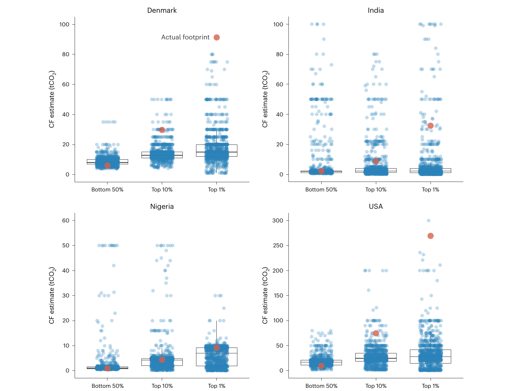
Nielsen, Bauer, et al. (2024)
The answer
In the USA, the footprint of the richest 1% is about 28 times that of the poorest half. (Nielsen, Bauer, et al., 2024)
In four countries, 93% of participants underestimated this inequality, and high earners were no more accurate than others. (Nielsen, Bauer, et al., 2024)
On average, the more people underestimated it, the less they tended to support climate policy. (Nielsen, Bauer, et al., 2024)
People tend to overrate small, easy actions and underrate both the large ones and the share of emissions caused by the richest. Interventions that ask individuals to do more may aim at the wrong behaviours and the wrong people.
3. What do behavioural interventions achieve?
Small effects, smaller at scale
In week 4, home energy reports that compared households with their neighbours cut energy use by about 2%. (Allcott, 2011)
Across field studies, the average effect of climate interventions was small, and smaller still in the largest trials. (Bergquist et al., 2023)
Chater and Loewenstein would count all interventions in this section as i-frame: they try to change what individuals do within the existing rules.
Which tools work best?
Across 10 meta-analyses of field studies, social comparisons and financial incentives had the largest effects, and education and feedback the smallest. After correcting for unpublished weak results, the ranking becomes much less clear. (Bergquist et al., 2023)
“Knowledge, such as basic problem awareness, is likely a necessary but insufficient condition for behavioral change.” (Bergquist et al., 2023)
Which behaviours move?
Interventions moved littering and recycling the most, and transport the least. (Bergquist et al., 2023)
In randomised trials, where chance decides who gets an intervention, “critical actions such as the purchase of energy-efficient appliances and private car use were barely affected”. (Nisa et al., 2019)
The behaviours that are easiest to change are often the ones that matter least for emissions.
What randomised trials show
Across 83 randomised trials, behavioural interventions had a very small effect while they lasted, and no clear lasting effect. (Nisa et al., 2019)
The authors caution that this does not mean such interventions work worse than incentives or regulation. (Nisa et al., 2019)
The same data, different answers
One reanalysis of the same trials found an average effect about twice as large as the original. (Van Der Linden & Goldberg, 2020)
A 2026 reanalysis corrected for publication bias, the tendency for studies with weak results to stay unpublished. It concludes that the average effect is most likely zero. (Hardaker et al., 2026)
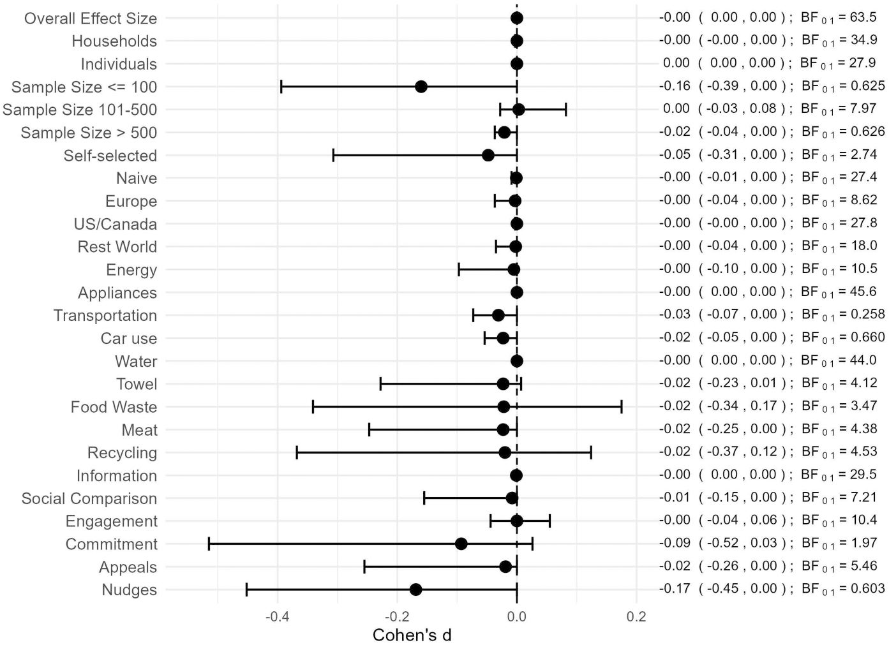
Hardaker et al. (2026)
Nudges in general
Nudges change how choices are presented and leave the options themselves unchanged. A meta-analysis found a small-to-medium average effect. (Mertens et al., 2022) A reanalysis that corrected for publication bias found no clear evidence of an average effect. (Maier et al., 2022)
When US government nudge teams ran nudges at scale, the effect was about one sixth of that in academic journals. (DellaVigna & Linos, 2022)
Where behavioural tools do well: defaults
A default is the option people get unless they actively choose otherwise. In a German study, making green electricity the default increased its uptake nearly tenfold. (Ebeling & Lotz, 2015)
Defaults are set by an electricity provider or a regulator, and they change the structure of the choice. In section 4 we ask what such a default does for emissions.
A tournament of eleven interventions
In the tournament from week 4, with participants in 63 countries, effects were small. Participants could plant real trees by completing a tedious online task. No intervention increased the number of trees, and the ones that reduced it took longest to complete. (Vlasceanu et al., 2024)
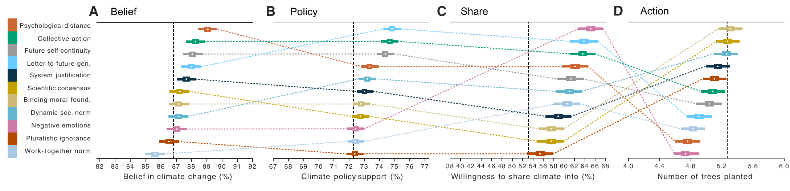
Vlasceanu et al. (2024)
Explore the tournament data (6 minutes, in pairs)
Open the data explorer and go to “Explore the Data”.
- Pick a country and one outcome. Which intervention comes first?
- How large is the sample behind that result?
- Switch the outcome to tree planting. Does the same intervention still win?
Afterwards: what does this suggest about using one ranking of interventions to decide what to do?
climate-interventions.shinyapps.io
What predicts which intervention works?
Across 15 megastudies, interventions worked best when they were designed for the exact outcome being measured. None of the other 18 features tested reliably predicted success. (Patel et al., 2026)
On average, behavioural interventions change behaviour a little, and possibly not at all once publication bias is accounted for. They work best on actions that matter less, and when they change the structure of a choice.
4. Changing the players or changing the game
Two behavioural scientists change their minds
Chater and Loewenstein wrote in 2023:
“An influential line of thinking in behavioral science, to which the two authors have long subscribed, is that many of society’s most pressing problems can be addressed […] at the level of the individual […]. We now believe this was a mistake”. (Chater & Loewenstein, 2023a)
Two frames
“S-frame interventions involve changing the rules of the game; i-frame interventions attempt to modify the actions of the players, within the existing rules.” (Chater & Loewenstein, 2023b)
For climate change, their examples range from energy feedback and carbon footprint calculators (i-frame) to carbon pricing and building codes (s-frame). (Chater & Loewenstein, 2023a)
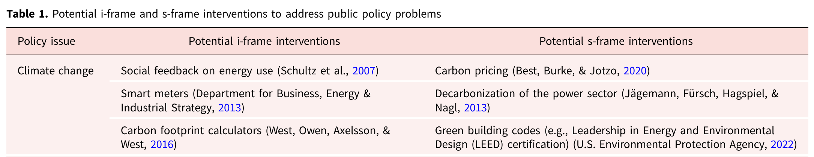
Chater & Loewenstein (2023a), Table 1
First argument: the effects are small
“Unlike traditional policies, i-frame interventions don’t fundamentally change the rules of the game, but make subtle adjustments to help fallible individuals play the game better.” (Chater & Loewenstein, 2023a)
As we saw in section 3, the average effects are small, and smaller still when interventions run at scale.
A green default in Switzerland
In a Swiss field study, about 80% of customers stayed with a green electricity default for at least four years. (Liebe et al., 2021)
Chater and Loewenstein argue that this changes emissions very little, because existing green energy is only reallocated. (Chater & Loewenstein, 2023a)
Is a green default an i-frame or an s-frame tool? Take one minute with your neighbour and decide.
Second argument: crowding out
“There is a deeper concern: i-frame interventions may draw attention and support from crucial s-frame changes.” (Chater & Loewenstein, 2023a)
Does one green behaviour lead to another?
In a meta-analysis, a first green behaviour slightly raised intentions for a second one, but it did not, on average, change the second behaviour itself or support for environmental policy. (Maki et al., 2019)
In one field experiment, households that got feedback on their water use cut it by 6.0% and increased their electricity use by 5.6%. (Tiefenbeck et al., 2013)
Does a nudge lower support for a carbon tax?
In hypothetical policy choices, 70% of US participants supported a carbon tax when it was the only option on the table. (Hagmann et al., 2019)
What do you expect happened when a green energy default was also on offer?
Support for the tax fell to 55%. (Hagmann et al., 2019)
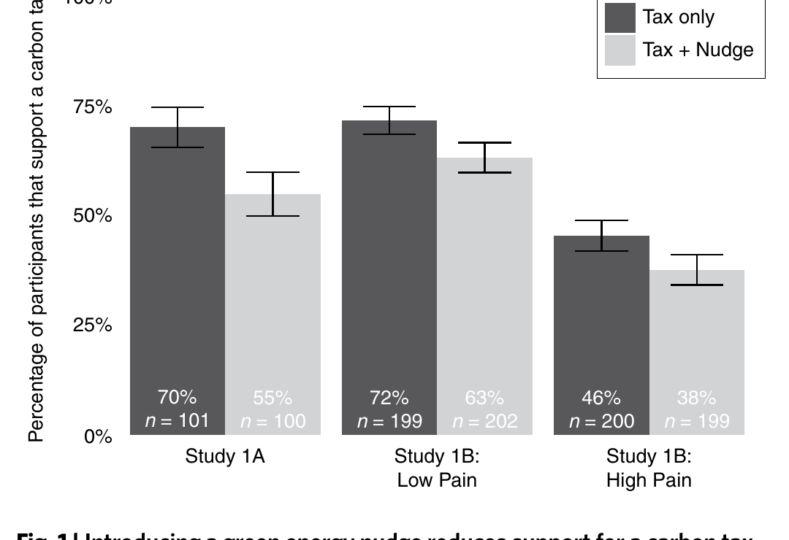
Hagmann et al. (2019)
Telling people the nudge is small
In a later preregistered study by the same team, 70% supported the tax when it was presented before the green default, and 60% when the default came first. (Hagmann et al., 2019)
When participants also learned how little the default would cut emissions, support for the tax was 72%, and support for the default did not fall. (Hagmann et al., 2019)
Does crowding out happen?
Show of hands: do individual measures generally crowd out support for policy?
When Hagmann and colleagues repeated their first experiment, the drop in support was smaller and could have been chance. (Hagmann et al., 2019)
A survey that followed the same Australians from 2021 to 2024 found little evidence of crowding out, and neither did two experiments. (Ghasemi et al., 2025; Ghasemi et al., 2026) Other studies did find it. (Goldwert et al., 2025; Knook et al., 2022)
It may depend on how we talk about it
Thinking about one’s own green behaviour reduced policy support only when both held: the policy’s costs fell on individuals, and the behaviour was not linked to one’s values. (Sparkman et al., 2021)
When it was linked to values or identity, support rose. (Sparkman et al., 2021)
Changing behaviour and supporting policy can go together
In an international survey, people who thought they could more easily change a behaviour also supported more climate policies in that area. (Kukowski et al., 2023)
The data are correlational, but they fit the idea that personal and political action need not compete.
Third argument: who benefits from the i-frame?
Recall the carbon footprint from week 9, popularised by BP. Chater and Loewenstein describe how oil companies “worked to reframe the problem of carbon reduction in i-frame, not s-frame, terms”. (Chater & Loewenstein, 2023a; Kaufman, 2020)
Footprint information is still useful, as section 2 showed. The question is whether it replaces policy or motivates it.
The same pattern for plastics
A US anti-littering campaign funded by beverage and packaging companies told the public: “People start pollution. People can stop it.” (Chater & Loewenstein, 2023a)
Chater and Loewenstein cite the US Environmental Protection Agency: less than 10% of plastic has been recycled in the last 40 years. (Chater & Loewenstein, 2023a)
“Corporations relentlessly target the s-frame, where they know the real leverage lies.”
5. Beyond the dichotomy: individuals in many roles
The critics
“There is no sense to be made of prioritizing either system change or individual change, because each requires the other.” (Madva et al., 2023)
“In the real world of policymaking, behavioral science is mostly being used to reform systems, not to alter individual behavior.” (Sunstein, 2023)
The authors’ reply
“[I]-frame and s-frame policies should be viewed as complements, not substitutes: That is, that surely both are required. We agree, and regret if we failed to convey this clearly.” (Chater & Loewenstein, 2023b)
The IPCC makes a similar point: behavioural interventions “work synergistically with price signals, making the combination more effective”. (Calvin et al., 2023)
Changing demand involves infrastructure, technology and behaviour
The IPCC estimates that changes in how buildings, transport and food are used and provided could cut their emissions by 40–70% by 2050, compared with the policies announced by 2020. (Calvin et al., 2023)
This potential includes infrastructure and technology, and the figure does not show how much comes from behaviour alone. It suggests that changes in demand and changes to the system go together.
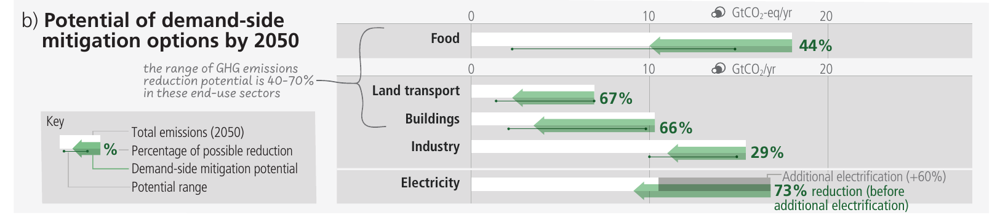
Calvin et al. (2023), Figure SPM.7b
A false binary?
“This distinction risks hardening into a false binary that separates individuals and systems. Yet the social, political, economic and cultural systems that need to change are composed of individuals […].” (Kukowski et al., 2026)
If your answers about the green default split, that is one reason not to treat the distinction as a binary. The reading’s three levels make a similar point. (Fielding & Hornsey, 2026)
Individuals are more than consumers
“Many behavioural scientists implicitly equate individual climate behaviour with consumer behaviour.” (Nielsen, Cologna, et al., 2024)
But individuals can also push for change at work and in their communities, move their money, vote, and join social movements. Hampton and Whitmarsh call these domains influence and citizenship. (Hampton & Whitmarsh, 2023; Nielsen, Cologna, et al., 2024)
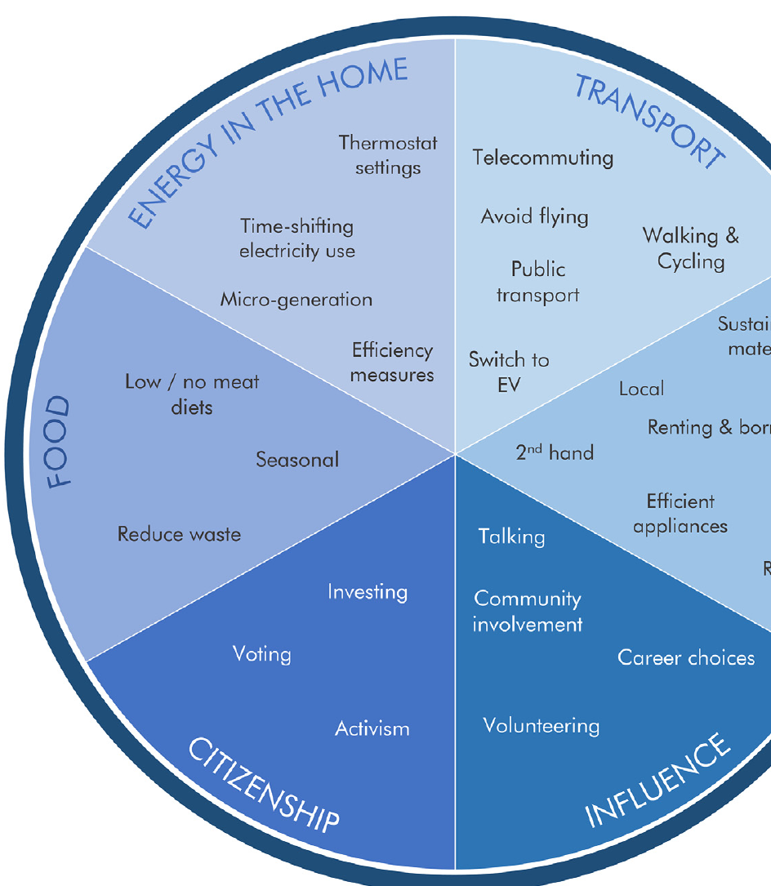
Hampton & Whitmarsh (2023)
The agency frame
Kukowski, Nielsen and colleagues ask where people have the power to make a difference (agency), how they can use it, and what limits it. They look at five roles: citizen, professional, investor, consumer and role model. (Kukowski et al., 2026)
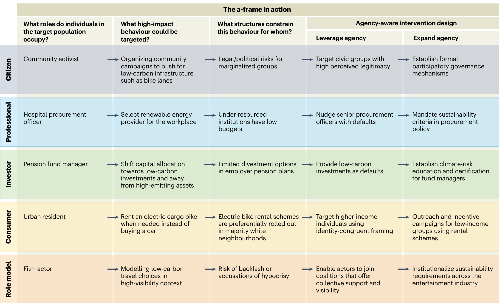
Kukowski et al. (2026)
Agency is unequal
A frontline worker at Amazon has little say over corporate climate policy, while an executive may shape procurement, investment and lobbying. (Kukowski et al., 2026)
Recall that most emissions of the 1% with the highest emissions come through their investments. Some of their largest levers may therefore lie outside their role as consumers. (Chancel, 2022; Nielsen et al., 2021)
Systems are made of people in roles. A useful question is “whose behaviour, in which role, can change the system?”
6. What can communication do for system change?
Behavioural science for the s-frame
Chater and Loewenstein now see a major role for behavioural science in helping “to mobilize popular support to overcome powerful vested interests”. (Chater & Loewenstein, 2023b)
This is harder to study, because a carbon tax cannot be tested in a randomised trial. (Connolly et al., 2024) Most of the evidence that follows comes from surveys and online experiments with citizens and voters.
What makes a climate policy acceptable?
Across studies from 33 countries, support for climate taxes and laws was most strongly associated with whether people saw the policy as fair and as effective. Knowledge about climate change was only weakly related to support. (Bergquist et al., 2022)
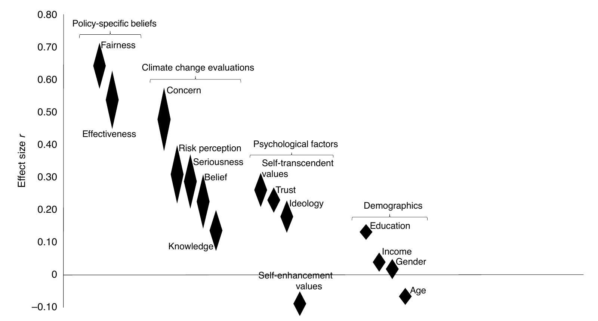
Bergquist et al. (2022)
Telling people is not enough
At the time of the study, Canada and Switzerland were the only countries that returned carbon tax revenue to residents. People in both knew little about the rebates and underestimated them. (Mildenberger et al., 2022)
Telling people their true rebate had modest effects on support in Switzerland and possibly negative effects in Canada. (Mildenberger et al., 2022)
Policies can create their own support
In Stockholm, people accepted a congestion charge more after a trial period than they had before it. (Schuitema et al., 2010)
Some researchers therefore propose trial runs: let people experience a policy before they vote on it. (Cherry & Kallbekken, 2023)
Switzerland: two climate laws
| CO₂ law | Climate and Innovation Act | |
|---|---|---|
| Vote | 13 June 2021 | 18 June 2023 |
| Approach | higher charges, for example on flights and heating oil | net zero by 2050, subsidies, no bans |
One of the two laws passed. Which one, and why?
The CO₂ law was rejected with 48.4% yes. The Climate and Innovation Act was accepted with 59.1%. (gfs.bern, 2021, 2023)
What changed between the two votes?
In 2021, the No voters’ reasons were mostly financial, although almost half of them wanted more decisive climate action. (gfs.bern, 2021)
In 2023, supporters of the centre-right Mitte and FDP voted Yes far more often. Most Yes voters valued switching heating without new taxes. (gfs.bern, 2023)
In 2021, two agricultural initiatives on the same ballot had mobilised rural voters, which the post-vote analysis sees as decisive. (gfs.bern, 2023)
A dilemma for communication
If laws based on subsidies pass more easily than laws based on prices, communicators face a trade-off. What voters accept may differ from what Chater and Loewenstein, among others, consider necessary: a substantial carbon tax alongside regulation. (Chater & Loewenstein, 2023a)
Mobilising citizens
In a US megastudy, a message that people acting together can make a difference, and that climate action feels good, raised willingness to advocate by up to 10 percentage points. (Goldwert et al., 2026)
These outcomes were mostly commitments and self-reports, and the follow-up was too small to show whether the effect lasted. (Goldwert et al., 2026)
Does engagement turn into attendance?
In one study, a 12-week programme raised participants’ sense of efficacy and engagement, but it did not increase how often they attended activist events. (Castiglione et al., 2022)
Tipping points?
In an online game, a committed minority of about a quarter was enough to change the name a group used for a face. The authors stress that this threshold is not universal. (Centola et al., 2018)
Models suggest that green norms tip more easily when adopting them is cheap, and less easily when it is costly. (Berger et al., 2023)
What communication and psychology might do, on thin evidence
- Research can show which policies people see as fair and effective. (Bergquist et al., 2022)
- Saying that a nudge is no substitute may protect support for bigger policies. (Hagmann et al., 2019)
- Correcting misperceptions may partly help, with possible side effects. (Goldwert et al., 2025; Herberz et al., 2026)
- Messages can mobilise citizens a little, perhaps only briefly. (Goldwert et al., 2026)
What they are unlikely to do
- Communication alone is unlikely to overcome vested interests and lobbying, which Chater and Loewenstein see as the main obstacle to reform. (Chater & Loewenstein, 2023a)
- Partisan identities shape how people read even accurate information, such as their true carbon tax rebate. (Mildenberger et al., 2022)
- The two Swiss votes suggest that policy design, coalitions and turnout may matter at least as much as messages. (gfs.bern, 2023)
From the i-frame to the s-frame, and who has the agency? (15 minutes in groups of 4–5, then 7 minutes to report)
Each group gets one behaviour, depending on where you sit: commuting to campus by car, flying for short holidays, eating red meat in the ETH canteens, heating with an oil boiler as a tenant, or buying new electronics.
- Name one measure aimed at the individual, and say what it could plausibly achieve.
- Name one change to the system, and say who, in which role, could push for it.
- Name the strongest argument against your system change. Could communication answer it?
Write one sentence per question. One group per behaviour reads its answers.
Conclusion
To take home
Many people intend to act, but intentions predict observed behaviour only weakly. Habits, social context and structures explain much of the gap.
People overrate low-impact actions such as recycling. They underrate several high-impact actions, and how unequal emissions are.
Behavioural interventions on individuals have small average effects, which shrink at scale and after correcting for publication bias.
To take home
Chater and Loewenstein argue that behavioural science has focused too much on individuals. Whether individual measures crowd out support for policy is contested.
Systems change partly through people acting as citizens, professionals and investors, so individuals and systems cannot be cleanly separated.
Communication may help good policies win support, although the evidence is thin. It is unlikely to replace policy design and coalitions.
Changing individuals one at a time seems to get us only a small part of the way. A more promising question for psychology and communication is how to help people use the roles in which they can change the rules.
References
Backup
Chater and Loewenstein’s full table
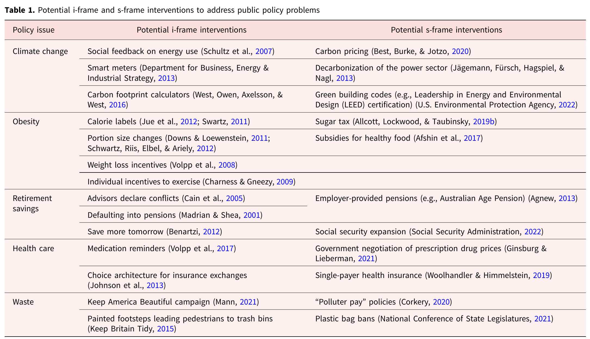
Chater & Loewenstein (2023a), Table 1
What nudge practitioners replied
Richard Thaler: “No nudge unit has the ability to say, hey, let’s try a carbon tax in half the country and strict emission rules in the other and see how it goes.” (Thaler, 2023)
Michael Hallsworth: the distinction is “incoherent, unhelpful, and obscures promising future directions for behavioral public policy”. (Hallsworth, 2023)
Individual measures can support system change
Without individual-level measures, “many s-frame interventions are likely to fail because of low compliance, lack of enforcement, or reactance”. (Zhao & Chen, 2023)
Others call for a community frame: “The binary of an i- and s-frame obscures how behavioral science can help foster bottom-up collective action.” (Caggiano et al., 2023)